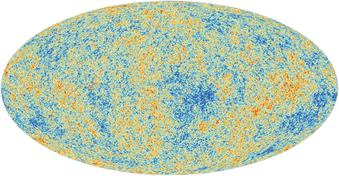
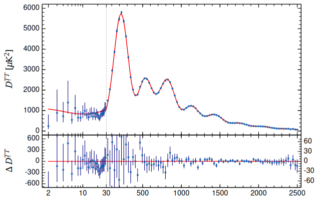
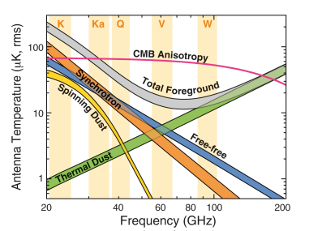
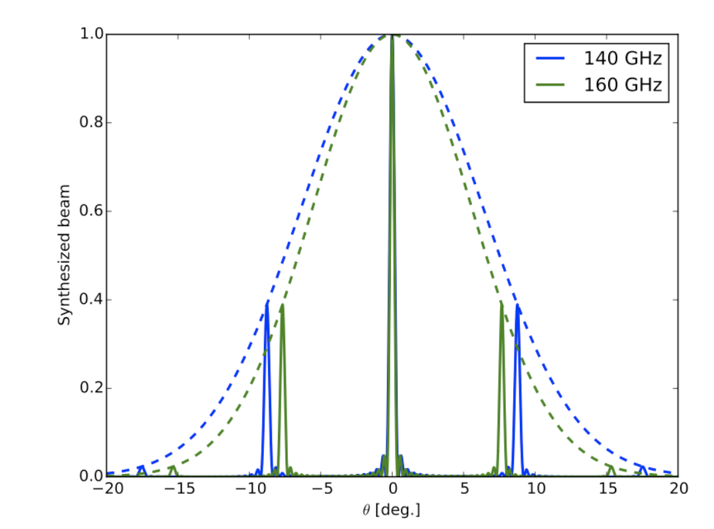
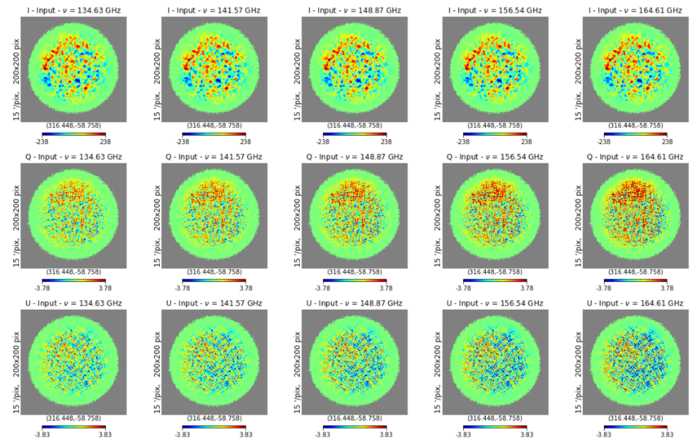
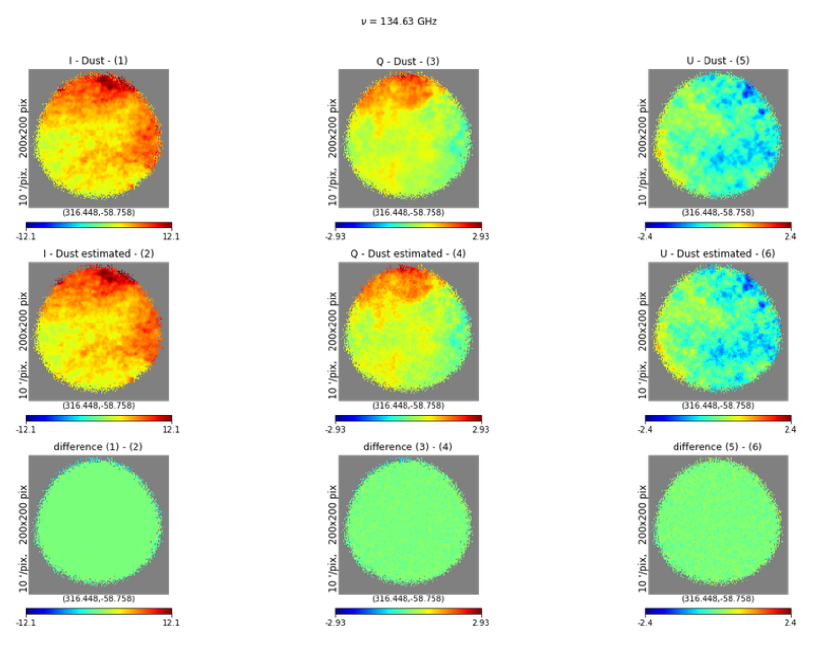
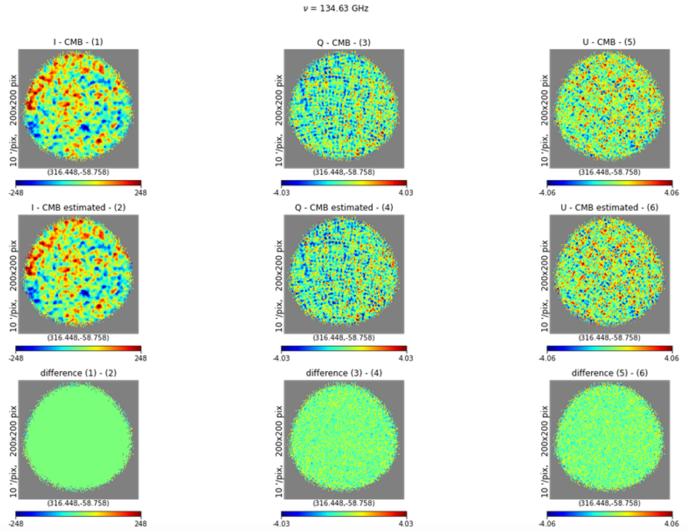
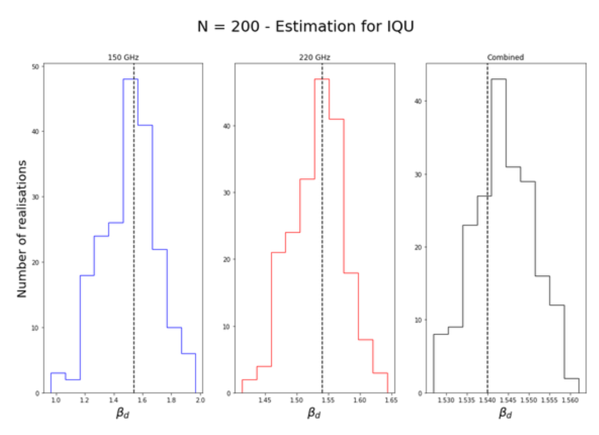
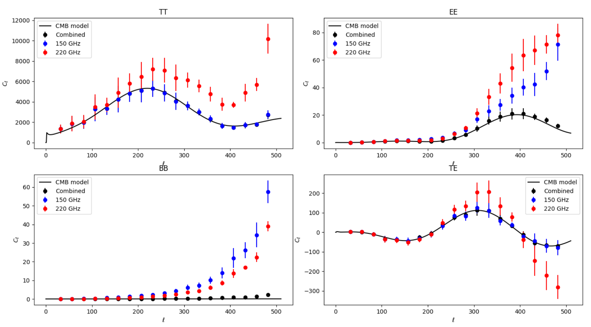

Intership of the second year of master's degree
Presentation
During my 2nd year master internship at the University of Toulouse III - Paul Sabatier, I was able to do my internship at the APC laboratory (Astroparticle, Particle and Cosmology) laboratory in Paris in the Cosmology department. I was able to work with Jean-Christophe Hamilton's team team within the QUBIC collaboration on the separation of astrophysical components for this experiment aiming at detecting the B-modes of the cosmic microwave background (CMB) polarisation. Cosmic Microwave Background (CMB).
Introduction
Contemporary cosmology attempts to trace the history of the universe from our time to the most primordial moments. The theories available today Today's theories describe a universe that becomes hotter and denser as we go back in time. These theories fail to describe the physics of our universe in its earliest days. of our universe in its earliest moments because it is necessary to combine general relativity and quantum mechanics. This theory is still unknown to us. unknown to us, however it is possible to test our hypotheses before Planck time which corresponds to `t_(text{Planck}) ≈ 10^(-44)` s after the supposed initial instant.
Our theories predict some phenomena that have already been experimentally verified such as the expansion of the universe, the cosmic microwave background but also other phenomena such as cosmological inflation which is a very large expansion of the universe in a very short time. This would have expanded by a factor `10^(26)` in a time of the order of `10^(-36)` s to `10^(-33)` s. In particular, this theory of cosmic inflation allows us to propose a solution to the flatness problem which shows us that it is difficult to explain theoretically the weak curvature of the universe as a whole. Inflation also allows us to propose a solution to the horizon problem, which shows us that certain areas of our universe seem particularly similar even though they have not had time to exchange any information. Inflation may at first sight escape our understanding but it is a theory with many virtues a theory with many virtues and which, if validated, would take us one step closer to understanding our universe and its beginnings.
As the history of our universe unfolds, the universe, which is dense and hot, becomes increasingly cold and transparent. At 380,000 years after the supposed Big Bang, the first light from the universe to be emitted, which is now called the Cosmic Microwave Background (CMB), contains more and more light. ) contains hidden information that is essential for understanding the very early universe. We are interested here in the polarisation of this radiation, which contains scalar and tensor perturbations known as E and B modes. The QUBIC experiment experiment proposes to measure the B-modes of the cosmic microwave background polarisation using an innovative technique called bolometric interferometry. This technique combines the advantage of interferometry, which is the control of instrumental systematics, with bolometers, which provide a better sensitivity. Since B-modes are a very weak signal, it is necessary to design an extremely precise instrument whose characteristics are very well known in order to limit the risk of errors. The B-modes are a very weak signal, it is necessary to think of an extremely precise instrument and whose characteristics are very well known in order to limit the systematics and other undesirable effects.
A new problem now arises for the measurement of the B-modes of the CMB polarisation. Some calculations show that there may be leakage from the E-modes to the B-modes, which is a problem for the CMB. E-modes to B-modes which is a problem here, especially due to systematic effects of the instrument. Another important problem that must be taken into account Another important problem that must be taken into account and which will be the subject of this report is the creation of B-modes due to the astrophysical foregrounds, in particular because of the dust of the Milky Way disc. the Milky Way. A first attempt was made between 2010 and 2012 with the BICEP mission, which published in the journal Nature the first observation of primordial gravitational waves (or B-modes). The following year, a correction was published explaining that the signal actually seen by BICEP was the polarisation generated by the astrophysical foregrounds of our Milky Way. This mission teaches us that in the study of the CMB and more This mission teaches us that in the study of the CMB and more particularly in the search for primordial B-modes, the control of the foregrounds is a crucial thing for the validation of the theory. There There is also a leakage of E-modes to B-modes with the gravitational lensing effect, this is seen rather at the smallest angular scales (towards the ). angular scales (towards the larger `ℓ` ) which is not really a problem for QUBIC.
To correct this effect, we will have to implement an astrophysical component separation algorithm, which thanks to the QUBIC maps will be able to provide us with CMB maps "purified" from other components such as the thermal emission due to galactic dust in a first step. In a In a second step, and if time permits, we will be able to look at the synchrotron emission, which is the second effect to be taken into account. This step allows us to ensure that the signal received does indeed come from the source that interests us here, the cosmic microwave background. To do this, we will use the package FG-Buster whose operation will be explained in the third part but which is a parametric method of separation of astrophysical components. One of the main issues of this internship and of a possible thesis afterwards will be to apply this method of component separation and to adapt it to the One of the main challenges of this internship and of a possible thesis will be to apply this component separation method and to adapt it to the particular operating mode of the QUBIC instrument. Indeed, during the map-making phase, it produces maps with spatial correlations (between neighbouring pixels) and frequency correlations (between sub-bands). Moreover, the synthetic lobe of QUBIC, which has several peaks unlike a classical imager, will have to be taken into account in this separation. Finally, in this Finally, in this study we will look at a so-called "map-based" separation method, i.e one that focuses on the intensity of the pixels. One of the follow-ups to be given during One of the follow-ups of a possible thesis within the QUBIC team would be to complete this approach and in parallel to develop a "spectrum-based" method, i.e. in the spherical harmonic base. The development of these two methods could be interesting in order to compare the results for the sake of coherence and ultimately for the sake of a better understanding of the environment. The development of these two methods could be interesting in order to compare the results for coherence purposes and ultimately to calculate the angular power spectrum of the primordial B modes. The QUBIC instrument could be an essential asset The QUBIC instrument could be an essential asset in the observation of large-scale B-modes in the polarisation of the cosmic microwave background, which would validate the theory of cosmic inflation and would be a major step forward in the development of the cosmic This would validate the theory of cosmic inflation and would be a major step forward in understanding the history of our universe.
Some theoretical elements...
Inflation
The inflation model solves many problems in cosmology, including the flatness problem, and helps explain why our universe is essentially homogeneous. This inflation theory predicts an exponential expansion in the size of our universe allowing the transition from a quantum universe consisting of a soup of elementary particles and where all the fundamental interactions are to a classical universe.
This theory was introduced in an attempt to solve two important problems in cosmology, the flatness problem and the horizon problem. The flatness problem is the difficulty our theories have in describing the very low curvature of our universe on very large scales. This This flatness comes from the fact that the visible part of our universe is very small compared to the whole universe. An analogy can be made with the Earth which appears flat to us on our scale on the ground, but if we step back, it does have a non-zero curvature. This flatness effect is only an illusion for us and our instruments. The second problem is the horizon problem, which shows that some areas of space have extremely close physical quantities while knowing that they could not exchange information. In the next section, we will present the cosmic microwave background in more detail, but it tells us that the deep universe radiates like a black body of about 3 Kelvin. This background background has anisotropies of the order of `10^(-5) text{K}` but how can two places in the universe that have not been able to exchange information can have the same temperature?
To solve these fundamental problems, we turn to the theory of inflation, which tells us that for a fraction of a second, the universe has expanded by an immense factor. expanded by an immense factor. To solve the cosmological problems, this inflation must have expanded our universe much faster than the speed of To solve the cosmological problems, this inflation had to expand our universe much faster than the speed of light, which allowed contact in the past between two regions that for us today could not communicate with each other. Inflation may be inflation may escape our intuition but it allows us to resolve conflicts as well as to explain certain observations, one of which is the cosmic microwave background. cosmological background.The cosmological diffuse background and its polarization
The theoretical framework in which we now place ourselves is an expanding universe filled with a primordial plasma. This plasma consists of a soup of elementary particles (protons, electrons, photons,...) and in very strong interaction with each other. At that time, the primordial fluid At that time, the ionised primordial fluid prevents the photons from moving freely, their mean free path is then very weak which makes this plasma opaque to the radiation. The universe then dilutes, its temperature and density decreases which allows at a time, the atomic nuclei to capture the free electrons, creating thus creating the first atoms. This moment is known as recombination, the atoms interact very little with the photons, the universe then becomes brutally transparent, it is the emission of light. This is the emission of the first light of the universe: the cosmic microwave background.
The last scattering surface is the surface where the fossil radiation was emitted, i.e. at 380 000 years after instant zero. This surface draws a sphere of 13.7 billion light years around the observer. It designates a region of space causally related to the observer, i.e. where the radius of this sphere is the maximum distance between two objects that could exchange information, in this case photons. This surface acts as an optical wall to observations, it is the furthest image that can be obtained of our universe using electromagnetic information. To go further in the observations, it will therefore be necessary to use another information mediator such as neutrinos or gravitational waves. neutrinos or gravitational waves. When the first photons are emitted at the last scattering surface, the radiation follows a black body law defined by
`B_(nu) (T) = (2 h nu^3)/(c^2) (1)/(e^((h nu)/(k T)) - 1)`
where h is Planck's constant, ν is the frequency of the radiation, k is Boltzmann's constant and T is the temperature of the body. Fossil radiation therefore follows this law with a homogeneous temperature in all directions of the order of T ∼ 3000 K and `Delta T⁄ T ≈ 10^(-5)` . As this radiation reaches us in all directions, the universe continues to expand which, through the Doppler effect causes a shift towards red shift of the radiation of the order of `z ≈ 1000` . The signal that reaches us therefore no longer comes from a black body at 3000 K. Today, this radiation therefore corresponds to the thermal emission of a body of the order of 3 K. It has been measured more precisely thanks to the WMAP (Wilkinson Microwave Anisotropy Probe) satellite and then by the Planck satellite and thus corresponds to the emission of a black body of temperature `T_0 ≈ 2.725 ± 0.003 K` .
Temperature anisotropies
Previous missions show that it is easier to make a differential measurement of the background temperature rather than an absolute measurement of this temperature. We will note `Delta T` the temperature difference from the mean temperature defined above. We can describe the information related to the density fluctuations of the cosmic microwave background can be described by looking at two points on two lines of sight `vec(n)_1` and `vec(n)_2` forming an angle such that `cos(theta) = vec(n)_1 . vec(n)_2` , we therefore define a two-point correlation function points such that:
`C(vec(n)_1, vec(n)_2) = < Delta T(vec(n)_1) Delta T(vec(n)_2) >`
The E and B fields
The stokes parameters I, Q and U are very convenient quantities to use to characterise the electromagnetic field. However, they have a disadvantage in our situation, the parameters Q and U both describe the linear polarisation of the field as one is simply a rotation of the other, making them dependent on the orientation of the observer.

Similarly, it is possible to define E and B fields through spherical harmonics such as :
`E(vec(n)) = ∑ ∑ a_(lm)^E Y_(lm) (vec(n))``B(vec(n)) = ∑ ∑ a_(lm)^B Y_(lm) (vec(n))`
As the CMB is weakly polarized (about 10%), these signals are quite weak in front of the intensity parameter I. These fields are therefore now independent of the observer's position and allow the construction of a whole scalar field. The E-field is characterised as a scalar field (rotationally invariant). It allows the generation of Q polarization only, unlike the B field which allows the generation of both Q and U This difference will be a problem called B-mode leakage. Indeed, scalar perturbations generate the E-field only, whereas tensorial perturbations (gravitational waves) generate the U-field only. This effect makes the detection of B-modes difficult. This effect makes the detection of B-modes even more This effect makes the detection of B-modes even more difficult, even though the signal is already extremely weak.
Astrophysical foregrounds
In experiments related to the study of the CMB, the foregrounds play the role of major limitations. The very faint signals that one seeks to measure are very often at best polluted or even completely hidden by the emissions from the astrophysical foregrounds. We can mention for example free-free emission or braking radiation. The theory of electromagnetism teaches us that any variation in speed of a charged particle produces radiation. Here, the free electrons are braked by the galactic gas and therefore produce radiation that must be taken into account for the of the CMB. In our study, the main source we will deal with is the galactic dust in the Milky Way.

The QUBIC instrument
Instrumental concept
The QUBIC instrument works on the principle of bolometric interferometry, it will combine these two tools to take advantage of the benefits of each. In particular, this method makes it possible to take advantage of the very high sensitivity of bolometers cooled to very low temperatures and the very good control of systematic effects by interferometry. These numerous advantages could be These numerous advantages could be decisive since it is known that there is a mixing of the Stokes parameters Q and U, and subsequently leakage from the E modes to the B modes. This is a more complex operation, but one that will make it possible to This is a more complex operation but one that will allow us to overcome some of the limitations of conventional imagers.
The interferometric nature of QUBIC requires us to add a calibration step. This consists, from an antenna that sends signals with different phases, in the correction of these phases by the instrument so that all the signals are in the same phase. by the instrument so that all the signals can be processed together. A study phase was carried out by collaboration 1 and continues today, in order to calculate the correction coefficients. We This step is called 'self-calibration'. The QUBIC instrument is today the only instrument that has the objective of studying the B modes of the CMB polarisation and that has this key step of self-calibration. This gives it a clear advantage in the control of systematic effects and thus in the race for B-modes.

The figure on the left allows us to see a simplified diagram of the instrument, detailing its main components. All the elements shown in this diagram are of course placed in cryostats that can reach up to 300 mK. The photons that we wish to study enter through the window and then pass through filters and a half-wave plate in order to choose the polarisation of the radiations. This half-wave plate allows us to introduce a phase delay of half a wavelength λ. The radiation then passes through a polarising grid to choose the incoming polarisation. An electric field `vec(E)` that will be polarized along two axes x and y will undergo a transformation and be polarized along x' and y' as follows:
`vec(E)' = J_(text{rot})^t (theta) J_(text{HWP}) (theta) J_(text{rot}) (theta) vec(E)`
This results in a modulation:
`vec(E)' = (( cos(2 theta) , sin(2 theta)), ( sin(2 theta) , -cos(2 theta)))`The half-wave plate modulates the polarisation of the signal entering the cryostat and reduces instrumental noise. These Jones matrices will make it possible to take into account the systematic effects that are currently missing from our numerical simulations. effects that are currently missing in our numerical simulations. The polarising grid will allow us to choose the polarisation of the signal and therefore to know the orientation of the electric field as a function of the angle of the HWP. The signal then passes through what is called a horn array which separates the beams and forms a lobe on the sky. These horns play the same role as the slits in Young's slit experiment. Young's slit experiment. The light coming from the sky will pass through each horn, so the electromagnetic waves will interfere and form a specific pattern on the instrument.
Comparison with a conventional imager
The QUBIC instrument operates on a completely different principle to a conventional imager. It combines interferometry with signal measurement by bolometers cooled to very low temperatures (about 300 mK) for better accuracy. This combination allows the advantages of both techniques to be combined in order to obtain a finer measurement with less systematics.
For example, QUBIC scans the sky through its synthetic lobe and thus allows us to see the sky differently from a conventional telescope. Figure 3.4 shows us a two-dimensional slice of this synthetic lobe. Unlike a conventional imager, the QUBIC lobe has several peaks and the position of these peaks depends directly on the frequency. Physically, the instrument will observe different parts of the sky at different frequencies. This is one of the foundations of spectro-imaging, which is one of the strengths of the QUBIC instrument, and allows the creation of maps at different sub-frequencies in the 150 and 220 GHz bands. This approach will eventually allow better management of the foregrounds that are so troublesome in the study of the CMB. In addition, this synthetic lobe allows to see the angular correlations of the sky, which will facilitate This will greatly facilitate the estimation of the power spectra of the temperature and polarisation anisotropies of the cosmic microwave background.
In addition, interferometry is known to have good control over systematic effects, i.e. measurement errors related to the instrument itself. Besides the development of the instrument, the QUBIC collaboration is focusing on 'self-calibration', which aims to calibrate the instrument as accurately as possible. The term 'self' means that the detector has no information about the source the source, which makes the technique innovative. The instrument is the only experiment aiming at finding B-modes and having this self-calibration step. As the electromagnetic wave passes through the horn array (acting as interference slits), an interference pattern will be formed. By opening equivalent pairs of horns in turn, a specific pattern can be observed which must be the same for different pairs. Small imperfections can hide in the interference patterns and are necessarily due to the systematic effects of the instrument. This method makes it possible to This method allows to quantify them and to treat the synthetic lobe accordingly. This is a very strong method of correcting for systematic effects that is directly related to the interferometric nature of the instrument, which would be impossible with a conventional imager. would be impossible with a conventional imager.
Separation of components
Here we are interested in the component separation problem using the FG-Buster algorithm, but before we look at the results we can produce, it may be interesting to see the map-making problem. To do this, we define the signal we receive in each pixel as:
`vec(d)_p = A_p(vec(beta)).vec(s)_p + vec(n)_p`
where `vec(d)` is the signal we receive from the instrument (or TOD: Time Ordered Data in the case of QUBIC), `A(vec(beta))` is the mixing matrix parameterised by the unknown parameters `vec(beta)` to be estimated. Finally, the vector `vec(n)` represents the noise on our map. The problem is summarised in Appendix A and allows us to see the difficulty of the data processing as well as the map-making step. The above equation can be represented as the following way:
`((d_(text(pixel 1))), (d_(text(pixel 2))), (...), (d_(text(pixel N)))) = ((A_1^(text(CMB)), A_1^(text(DUST))), (A_2^(text(CMB)), A_2^(text(DUST))), (..., ... ), (A_N^(text(CMB)), A_N^(text(DUST)))) . ((s_(text(pixel 1))^(text(CMB)), ..., s_(text(pixel N))^(text(CMB))), (s_(text(pixel 1))^(text(DUST)), ..., s_(text(pixel N))^(text(DUST)))) + ((n_(text(pixel 1))), (n_(text(pixel 2))), (...), (n_(text(pixel N))))`
In Appendix A, we made the likelihood development used by FG-Buster into which we could inject the signal expression `vec(s)`. This operation allows us to define (see the development in Appendix A) the spectral likelihood function such that:
`-2 log mathcal{L}_(text(spec)) (beta) = K + (A^t N^(-1) vec(d))^t (A^t N^(-1) A)^(-1) (A^t N^(-1) vec(d))`This expression depends only on the spectral indices that we are trying to estimate here. We will therefore try to find the value of β (there may be several) that minimises this likelihood function. Once these spectral indices have been estimated, we can create the dust and CMB maps separately. In our case, it is assumed that dust is defined by a grey body relation at a temperature `T` , a frequency `nu` and possessing a spectral index `beta_d` . This relationship is of the form:
`s_d(nu) = A_d (nu)/(e^((h nu)/(k T)) - 1) (e^((h nu_0)/(k T)) - 1)/(nu_0) (nu/nu_0)^(beta_d)`Separation in a simple case: without noise
We can start applying this algorithm to the maps generated by the QUBIC instrument. We will place ourselves in the case of 5 subbands whose frequencies and angular resolutions are summarized in the table below:
150 GHz nu (GHz) 134.63 141.57 148.87 156.54 164.61 FWHM (deg) 0.43750306 0.41605639 0.39566106 0.3762655 0.35782075 220 GHz nu (GHz) 197.5 207.6 218.3 229.6 241.4 FWHM (deg) 0.29829754 0.28367481 0.2697689 0.25654467 0.24396869
Here we place ourselves in a simple case in order to apprehend the separation of components with FG-Buster. We therefore consider that our cards have a CMB signal as well as a dust signal that we will want to to separate. This separation will be done on 5 sub-bands and for a reference frequency `nu_(150)` = 150 GHz and `nu_(220)` = 220 GHz. Table 4.1 shows us that our maps are at 00 different resolutions, which This should be taken into account after discussion with the authors of the method. The addition of a setting function at the same resolution was one of the decisive steps. We therefore smooth our maps with a Gaussian kernel to degrade our maps to the worst resolution of each band.
.The input maps of the algorithm form an array of size (nfreq,nstokes,npix). We use maps in the healpix format which have a parameter NSIDE = 256, i.e. a pixelation of the order of `1.597 times 10^(-5) text( deg)^2` .
The figure below shows the first results of an astrophysical component separation in the QUBIC experiment. Here we have very simplified inputs compared to the final maps but the choice was made to proceed step by step made to proceed step by step by making the code more complex as we go along.
You can see from the residual maps for CMB and dust which is simply the difference between the theoretical map and the estimated map that the reconstruction is very good. By making several realisations of this separation, we can have a histogram of the estimates of the `beta_d` parameter. We start by doing a Monte Carlo on the estimation of βd for simple PySM maps and then on QUBIC maps with a band integration option enabled. This integration may have an influence on the estimation of the parameters, so it may be interesting to see how the algorithm behaves the algorithm behaves in the presence of band integration which is a particularity of QUBIC.


From the figures above we can see that the estimation is overall quite good for both cases. The figure on the left shows us that the estimate of the `beta_d` parameter is very good in the case where we have no integration on the bands. This is a first conclusive test of how the FG-Buster algorithm works. We have here a first separation of components in an extremely simplified case.
In order to have a model a little closer to reality, we now activate the integration on the bands. The map generation algorithm will therefore create several maps within the same band, and then integrate them on the frequencies. This operation averages out these realisations in a way. The figure on the right shows us the estimated parameter for the 150 GHz band, the 220 GHz band and the combination of the two. the combination of the two. It can be seen that the estimate is quite good in the case of the 150 GHz band, but that there is a bias for the 220 GHz band, which is therefore also reflected in the combination of the two. The integration creates maps that are slightly different from the previous ones, so it is not absurd to have a bias on the estimation of the parameters. However, the estimate is still quite close to the expected value, even if this effect must be taken into account. the expected value even if this effect should be studied to be able to correct it later.
Separation in the presence of white and uniform noise
Now that we have seen that our algorithm works for a simple case with no noise, we can make our model slightly more complex by adding uniform noise to start with. When the instrument is functional and takes its first data, the noise level will correspond to 3 years of acquisition. An argument in the map generation function allows us to manage this noise level. A major advantage of the of the FG-Buster function we use is that it itself estimates the noise correlation matrix `N = < n cdot n^t >` . The technique we use is to calculate the RMS (for Root Mean Square ) of the noise maps in order to quantify the effect.
.The figures above show us the maps purified by FG-Buster in a noisy case. We can see that the reconstruction of both components is very good (we have an estimate of `beta_d approx 1.539` in this case). The intensity I is very well reconstructed, the parameters Q and U showing the linear polarisation is quite well reconstructed despite some imperfections at small scales. We have here a case of functional component separation for white noise at the same level as that of the QUBIC instrument. It may be interesting to see the distribution of the reconstructions of the spectral parameters for several separation realisations.
The figure below shows us the estimation of the βd parameter for 200 different realisations with a white noise level corresponding to 3 years of data acquisition. In the majority of cases, for the band at 150 and 220 GHz band, the spectral index is rather well reconstructed. However, a large variance is observed in the case of the 150 GHz band and on the contrary, the combination of the two bands reduces this variance on the reconstruction of βd. This combination makes the algorithm more robust to the noise that can be put in the map, as these two bands are quite far apart and therefore allow a greater leverage on the estimation. on the estimation. This advantage allows us to give more information to FG-Buster than if the two bands were closer, so we have a better calculation of the likelihood function which leads to a better estimation of the parameters. a better estimation of the parameters.
The figure below shows us the estimation of the βd parameter for 200 different realisations with a white noise level corresponding to 3 years of data acquisition. In the majority of cases, for the band at 150 and 220 GHz band, the spectral index is rather well reconstructed. However, a large variance is observed in the case of the 150 GHz band and on the contrary, the combination of the two bands reduces this variance on the reconstruction of βd. This combination makes the algorithm more robust to the noise that can be put in the map, as these two bands are quite far apart and therefore allow a greater leverage on the estimation. on the estimation. This advantage allows us to give more information to FG-Buster than if the two bands were closer, so we have a better calculation of the likelihood function which leads to a better estimation of the parameters. a better estimation of the parameters.
Calculation of the angular power spectra
Previously, we have seen that the reconstruction of the spectral parameter βd is done rather well when we combine the two bands of the QUBIC instrument. This good reconstruction shows us that the component separation is functional, so we have CMB and dust maps and can now calculate the angular power spectra. In the QUBIC studies, the spectra are In the QUBIC studies, the spectra are calculated under the assumption that no foregrounds are present (although this is known to be false). It is therefore now possible to calculate these spectra while being certain that the foregrounds no longer play a role. no longer play any role.

It is now possible to run Monte Carlo simulations by generating maps, applying component separation and then calculating the angular power spectra. The upper figure shows us these results. The upper figure shows these results, the black curve corresponds to a typical CMB spectrum model. The red dots correspond to the estimation of the power spectrum from a map containing CMB and dust, which has been purified by the dust, which has been purified by FG-Buster. This first figure shows the estimation of the spectra in a noise-free case. During the separation, the spectral parameters were rather well estimated staying around 1.54. This allows us to ensure that our CMB maps are no longer polluted by Galactic dust. There is a very good agreement between the spectrum estimate for our purified maps with the model considered.

Spectra can therefore be constructed for each of the separate components. Here we have zoomed in on the BB coefficient seen earlier and on which we have displayed in black the CMB, dust as well as our input maps. The green and blue dots represent the estimated power spectrum of our purified CMB and dust maps respectively. The green and blue dots represent the estimated power spectrum of our purified CMB and dust maps respectively. The green and blue dots represent the power spectrum estimates of our CMB and purified dust maps respectively, and the spectra of maps consisting of only the component in question are shown as solid lines on top. It can be seen that the estimation of the spectra is in very good agreement with the models. We recall here that dust can be modelled as a power law of the form `beta ℓ^(-alpha)` where `alpha` and `beta` are two free parameters that can be estimated.
We can apply the same method by adding noise to our initial maps. This addition deteriorates the estimation of the spectral parameters. To correct this effect, we will use the combination of the two bands of the QUBIC instrument. The figure above shows us the results, as expected, when only one band is used, the estimated power spectra do not quite fit the model. In On the other hand, the combination of the two allows us to have a certain leverage which clearly improves the separation. We bring much more information to the algorithm, which thus proceeds to a better We are now able to estimate its likelihood function.
Conclusion
This internship allowed me to look at fundamental physics issues but also at an instrumental side which is also important. The missions of maintenance and finalization of the construction of the instrument allowed me to better understand its very particular functioning. These particularities make its analysis rather difficult but will certainly allow to cross a wall that some classical telescopes will be unable to cross. I was also able to take part in the packing and the preparation of the sending of the instrument (May 19, 2021) for its final destination which is Argentina in the area of San Antonio de los Cobres. This shipment is a step towards the first data collection of the instrument and thus towards the search for the B-modes of the cosmic microwave background.
During these 5 months of internship in the QUBIC collaboration at the APC laboratory, I was able to learn about primordial cosmology as well as the physics of the cosmic microwave background. This allowed me to understand in depth the problem that the instrument seeks to answer. The search for the B-modes of the polarisation of the cosmic microwave background is a very difficult quest, and for me it will be one of the next great discoveries in cosmology.
This internship has given me a very thorough introduction to bolometric interferometry, and has also allowed me to understand the issues related to the instrument and the data analysis. For example, before For example, before attempting to implement a component separation method, I had to learn about QUBIC-related methods. Over the years, the collaboration has developed a set of Python code for data analysis, self-calibration,... The first few weeks of my internship consisted of learning how to manage its specific functions, whether in map generation, power spectra calculation or others.
Then, I started to get interested in component separation methods, in particular the FG-Buster algorithm developed by Josquin Errard and Radek Stompor at the Astroparticle and Cosmology laboratory in Paris. This parametric component separation method attempts to estimate the free spectral parameters which in our case are simply the spectral index of the dust. In our third part, we have presented the general the general method employed, as well as a first simple approach without noise. We have seen that this method works well in this simplified case. We were then able to make our model slightly more complex by adding a level of noise level corresponding to that of QUBIC. This addition led to modifications within the algorithm so that we could estimate this noise level for each map. The results of the separation in the presence of The results of the separation in the presence of white noise are visible and show that quite good results are obtained. Furthermore, one of the advantages of the instrument is that it has two separate bands, which allows us to combine them, and thus to provide more information to constrain the parameters. information to constrain the spectral parameters.
Once the separation method was functional for a certain card model, we could calculate the angular power spectra corresponding to the coefficients TT, EE, BB and TE. These spectra allow us to verify the correct estimation of our CMB and dust maps. The estimates of these spectra show us that the combination of the two QUBIC bands again provides a better reconstruction than using a single band. At the time of writing, I am taking into account the non-uniform noise of the instrument. Due to the scanning strategy of the instrument on the sky, we spend more time Due to the scanning strategy of the instrument over the sky, we spend more time in the centre of the maps than at the edges, so we have a more intense noise level at the edges of the map. This non-uniformity has to be taken into account and this is what I am I'm doing now.
To put the work in perspective, we have applied a method of separating astrophysical components in a noise-free case and then in the white noise case. On the other hand, we know that due to the interferometric nature and the spectro-imaging step, the maps generated by the instrument have correlations between the stokes parameters and the sub-bands (Appendix D). These correlations must be taken into account in the algorithm in order to have an optimal separation. These correlation matrices should then appear in the calculation of the likelihood function. This modification step is an important step that requires This modification step is an important step that requires an in-depth modification of the algorithm, this work will be part of a potential thesis in parallel with other missions of simulations as well as data analysis.
Annexe
You can download the annexes in PDF format with the following line : Download
Mentions
- D. Baumann. Tasi lectures on inflation. ArXiv e-prints, 2009
- Romain Charlassier. Mesure des anisotropies de polarisation du fond diffus cosmologique avec l’interféromètre bolométrique QUBIC. PhD thesis, 08 2012.
- Alexandre Friedmann. « Über die krümmung des raumes » [« sur la courbure de l’espace »].
- Alan H. Guth. Inflationary universe : A possible solution to the horizon and flatness problems. Phys. Rev., 1980.
- J.-Ch. Hamilton L. Mousset and QUBIC collaboration. Qubic II : Spectro-polarimetry with bolometric interferometry. ArXiv e-prints, 2020.
- A. Stebbins M. Kamionkowski, A. Kosowsky. Phys. rev. ArXiv e-prints, 1997.
- E.S. Battistelli M. Piat, G. Stankowiak and QUBIC collaboration. Qubic IV : Performance of TES bolometers and readout electronics.
- A. A. Penzias and R. W. Wilson. A measurement of excess antenna temperature at 4080 mc/s. Astrophysical Journal, 07 1965.
- Collaboration QUBIC. QUBIC page .
- Federico Stivoli Radek Stompor, Samuel Leach and Carlo Baccigalupi. Maximum likelihood algorithm for parametric component separation in cosmic microwave background experiments. Mon. Not. R. Astron. Soc. 392, 216–232 (2009), 2008.
- Josquin Errard Radek Stompor. FG-Buster .
- P. de Bernardis S. Masi, E.S. Battistelli and QUBIC collaboration. Qubic V : Cryogenic system design and performance.
- Marie Anne Bigot Sazy. Mesure des anisotropies de polarisation du fond diffus cosmologique avec l’interféromètre bolométrique QUBIC. PhD thesis, 10 2013.
- Mikhail Stolpovskiy. Development of the B-mode measurements pipeline for QUBIC experiment. PhD thesis, 07 2016.
- S.A. Torchinsky and QUBIC collaboration. Qubic 3 : Laboratory characterization.
- U. Zaldarriaga, M. et Seljak. An all-sky analysis of polarization in the microwave back-ground. Phys. Rev., 1997.